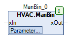
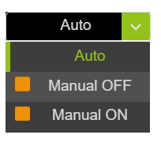

ManBin (FB)¶
FUNCTION_BLOCK ManBin EXTENDS MANASBase IMPLEMENTS IMan
Kurzbeschreibung¶
Handübersteuerung für ein binäres Signal
Darstellung¶

Schnittstellen¶
Eingänge¶
Name Datentyp Wertebereich Initialwert Funktion xIn BOOL Binärer Eingang
Ausgänge¶
Name Datentyp Wertebereich Initialwert Funktion xOut BOOL Binärer Ausgang
Sollwerte / Parameter¶
Name Datentyp Wertebereich Initialwert Funktion eManModeB eMANBIN eMANBIN.Auto, eMANBIN.ManOff, eMANBIN.ManOn eMANBIN.Auto Betriebsart für das binäre Ausgangssignal xOut
Funktionsbeschreibung¶
Allgemeines¶
Dieser Funktionsbaustein dient zur Handübersteuerung eines binären Eingangssignals xIn.
Binärer Ausgang xOut¶
xIn eManMode xOut Hinweise FALSE Auto FALSE Automatikbetrieb - Aus TRUE Auto TRUE Automatikbetrieb - Ein X ManOff FALSE Handbetrieb - Aus X ManOn TRUE Handbetrieb - Ein
Legende: X = beliebig
Visualisierung¶
Passendes Visualisierungselement aus der HVACV Visu Library: ManBin
Darstellung¶

Schnittstellen Visu-Element¶
Name Datentyp Typ Initialwert Funktion eManModeB eManBin VAR_IN_OUT Hier eManModeB eintragen Bsp. ManBin.eManModeB
Hinweis: VAR_IN_OUT Schnittstellen müssen belegt werden, VAR_INPUT sind optional.